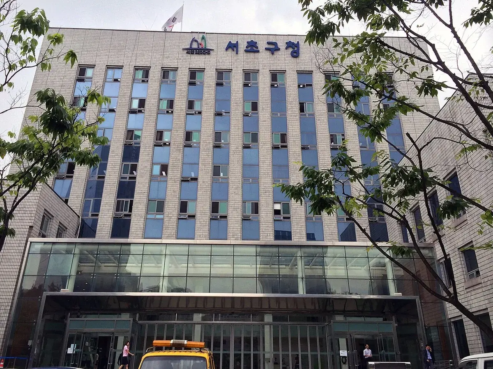
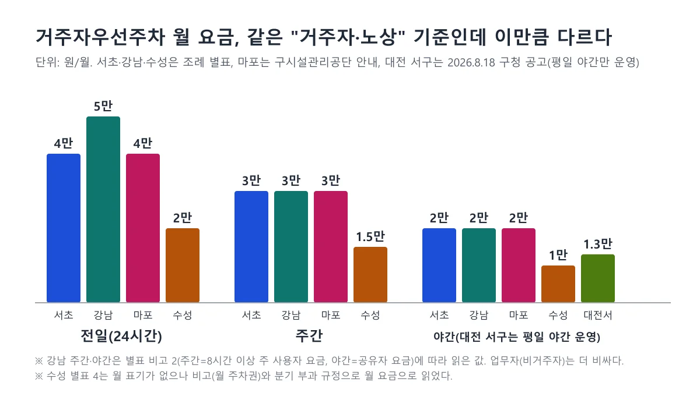
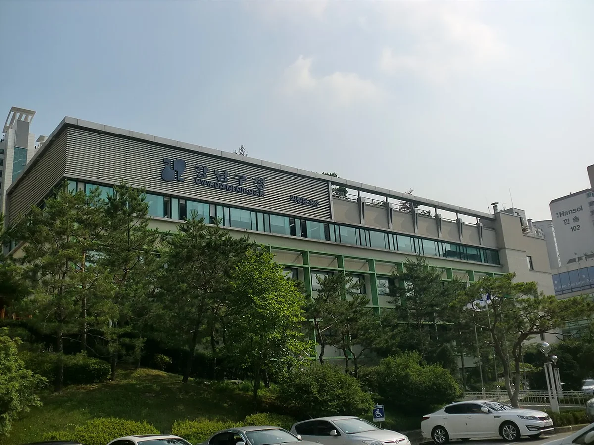
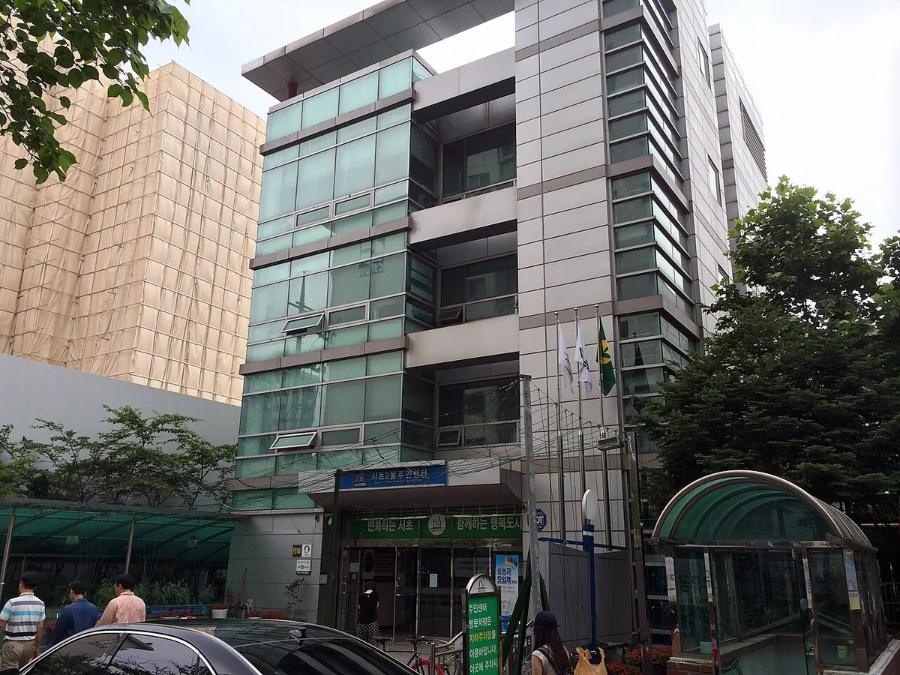
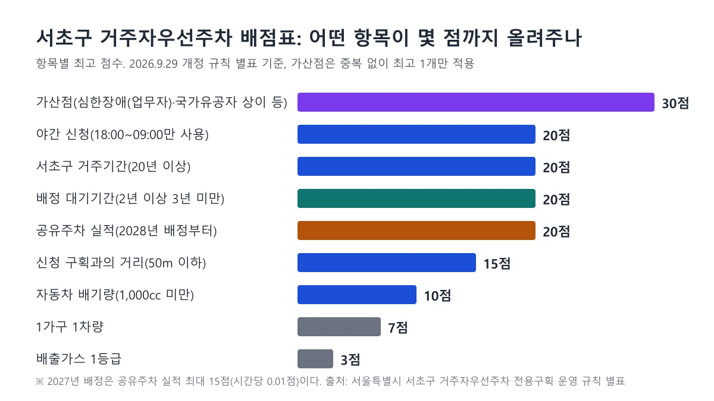
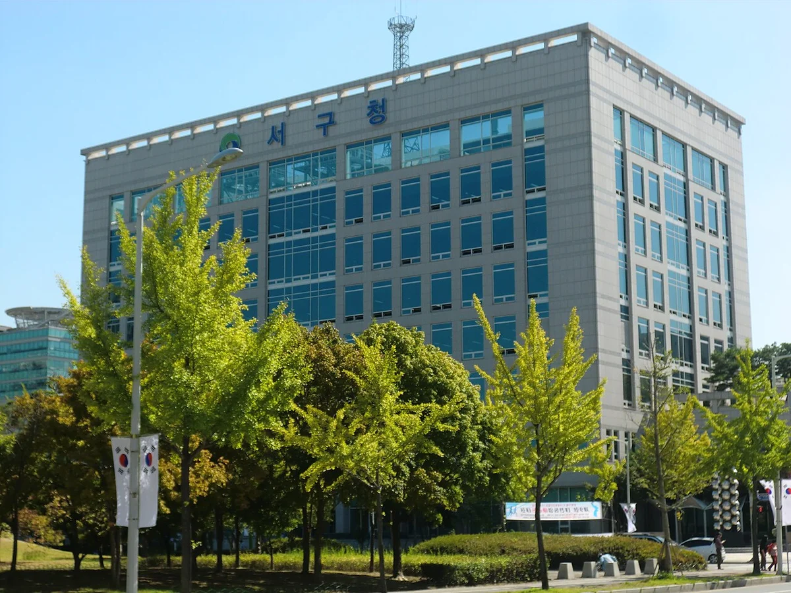
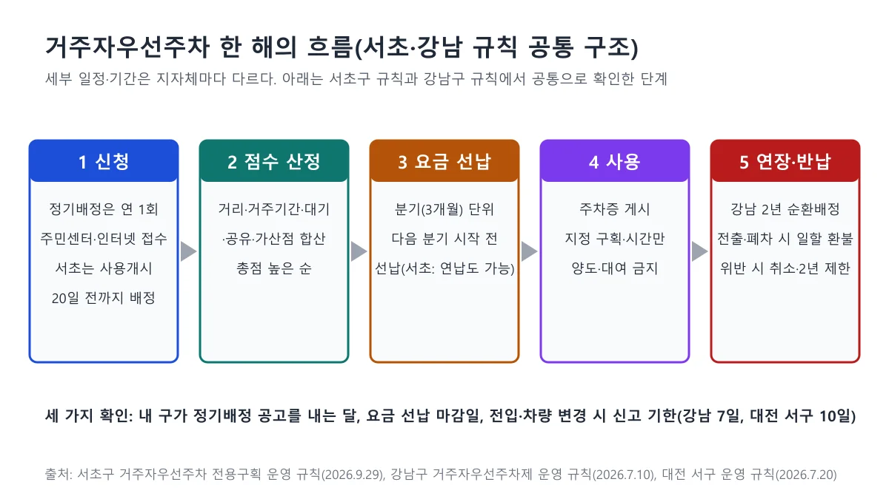
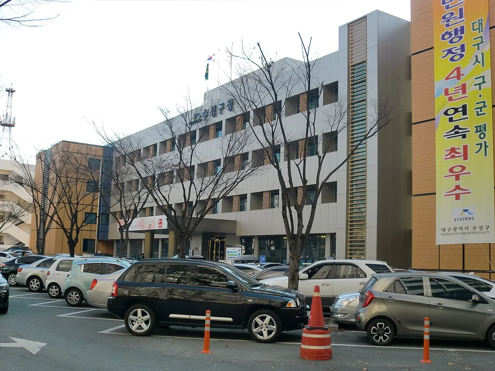

▲ 서울 마포구 연남동 골목의 주차 모습. 이런 주택가 골목 구획을 주민에게 월 단위로 배정하는 것이 거주자우선주차제다 ⓒ Paul Keller, Wikimedia Commons (CC BY 2.0)
집 앞 골목에 하얀 선이 그어져 있는데 내 차는 그 안에 못 세운다. 거주자우선주차제는 그 한 칸을 주민에게 월 단위로 유료 배정하는 제도이고, 요금과 배정 방식은 지자체가 조례와 규칙으로 정한다. 그래서 같은 "거주자 전일" 기준인데 서울 서초구·마포구는 월 4만 원, 강남구는 월 5만 원, 대구 수성구는 월 2만 원이다. 대전 서구는 평일 야간만 운영하고 월 1만 3,000원이다. 이 글은 주차장법·시행규칙에서 제도의 뼈대를 확인하고, 서울 서초·강남·마포, 대구 수성, 대전 서구의 조례·규칙·공식 공지를 직접 대조했다. 다섯 곳의 월 요금은 조례 별표나 구청·시설관리공단의 공식 안내로 확인했고, 확인하지 못한 항목은 표에 그렇게 적었다. 모든 수치는 지자체마다 다르다.
1. 법은 뼈대만 정한다 — 주차장법 제10조와 시행규칙 제6조의2

▲ 서초구청. 거주자우선주차의 요금·배점은 이런 기초지자체(구)의 조례와 규칙이 정한다 ⓒ 안우석, Wikimedia Commons (CC BY-SA 3.0)
국가법에는 "거주자우선주차"라는 이름이 직접 나오지 않는다. 주차장법 제10조 제1항 제3호는 시장·군수·구청장이 노상주차장 일부에 전용주차구획을 지정할 수 있다고 하고, 같은 조 제3항은 지정구역의 규모·방법·절차를 해당 지자체 조례로 정한다고 했다. 시행규칙 제6조의2 제1항이 전용주차구획을 둘 수 있는 경우를 열거하는데, 제1호가 "주거지역에 설치된 노상주차장으로서 인근 주민의 자동차를 위한 경우"다. 이것이 거주자우선주차제의 법적 근거다. 주차장법 시행령이 아니라 시행규칙에 있다는 점을 확인했다.
| 조문 | 내용(요지) | 의미 |
|---|---|---|
| 주차장법 제10조 제1항 제3호·제3항 | 노상주차장 일부에 전용주차구획 지정, 규모·방법·절차는 조례 | 구마다 운영 방식이 달라지는 출발점 |
| 시행규칙 제6조의2 제1항 제1호 | 주거지역 노상주차장에서 인근 주민 자동차를 위한 구획 | "거주자 우선" 구획의 직접 근거 |
| 시행규칙 제6조의2 제2항 | 전용 자동차가 주차하지 않는 시간대에 다른 자동차 주차 허용 가능 | 야간·낮 시간 개방, 공유주차의 근거 |
| 주차장법 제9조 제1항 단서 | 경형자동차·환경친화적 자동차는 주차요금의 100분의 50 이상 감면 | 서초구 조례의 경형·저공해차 50% 감면의 법적 뼈대 |
| 주차장법 제9조 제2항·제3항 | 요율·징수방법은 조례, 위반 시 요금의 4배 이내 가산금 | 부정주차 가산금 상한 |
| 주차장법 제8조의2 | 이동 명령, 현장에 없으면 이동·이동제한장치 설치, 이동 시 도로교통법 준용 | 견인 조치의 근거 |
| 주차장법 제10조의2 제2항 | 관리자는 주의의무를 다했음을 증명하지 못하면 손해배상 책임, 다만 관리자가 상주하지 않는 노상주차장은 제외 | 상주 관리자 없는 골목 구획은 파손 책임이 달라질 수 있음 |
확인한 조문은 국가법령정보센터 기준 주차장법(2026년 8월 28일 시행본)과 시행규칙(2026년 7월 27일 시행본)이다. 그래서 "전국 공통 월 요금"이나 "전국 공통 배정 점수"는 존재하지 않는다. 같은 제도가 구마다 다른 이유다.
주차장법 시행규칙 원문 바로가기2. 서초·강남·마포·수성·대전 서구 — 확인한 요금과 운영 방식 비교표

▲ 카프리즘이 조례 별표와 구청·시설관리공단 안내를 옮겨 만든 도표. 강남 주간·야간은 별표 비고 2에 따라 읽은 값이고, 대전 서구는 평일 야간만 운영해 야간 칸에만 넣었다
아래 표는 조례·시행규칙 원문과 구청·시설관리공단의 공식 안내에서 직접 확인한 값만 적었다. 마포구는 조례에 거주자우선 월 요금표가 없고 구시설관리공단 안내에, 대전 서구는 조례 별표 2와 2026년 8월 18일 구청 공고에 요금이 있다. 모든 구의 요금은 개정될 수 있으므로 신청 전 구청 공고를 다시 봐야 한다.
| 지자체 | 월 요금(확인분) | 시간 구분·배정 주기 | 부정주차 시 |
|---|---|---|---|
| 서울 서초구 | 노상 거주자 전일 4만, 주간 3만, 야간 2만 원(분기 선납 시 12만·9만·6만 원). 업무자 5만·3.5만·2.5만 원(조례 별표 2, 2023.12.8 개정). 공영주차장 안 거주자우선은 거주자 전일 월 5만 원(구청 포털은 업무자 이용불가로 안내, 조례 별표에는 업무자 칸도 있음) | 전일 24시간, 주간 09:00~18:00, 야간 18:00~09:00(거주자 야간은 토·일·공휴일 전일 사용 가능). 배정 1년 단위, 정기배정 연 1회(2027년도는 2026.10.19~10.30 접수), 빈 구획은 수시배정. 요금은 연납 또는 분기 선납 | 4시간 요금 부과, 1시간 요금의 4배 가산금, 견인 병행(규칙 제10조) |
| 서울 강남구 | 거주자 전일 5만 원, 업무자 10만 원(조례 별표 1의2, 2025.11.7 개정). 같은 별표에서 거주자 주간 3만, 야간 2만 원(비고 2: 주간은 8시간 이상 제공 주 사용자 요금, 야간은 공유자 요금을 준용). 함께쓰기(1+1)는 4시간 이상 제공 시 주 사용자 3만 5,000원·공유자 1만 5,000원, 8시간 이상 제공 시 3만·2만 원(표 열 구조상 읽은 값) | 전일 24시간, 주간 08:30~19:00, 야간 19:00~08:30. 2년 단위 순환배정 가능, 요금은 분기 선납(규칙 제4조·제11조, 2026.7.10 전부개정). 2027년 배정 순환배정 대기자 모집은 2026.8.31 마감, 9월 이후 선정해 2027.1.1부터 사용(강남구 공지) | 공영주차장 3급지 요금과 가산금 부과 가능, 견인 병과 가능(규칙 제7조) |
| 서울 마포구 | 거주자 전일 4만, 주간 3만, 야간 2만 원. 비거주자(관내 사업자·재직자) 5만·3.5만·2.5만 원. 시설공영주차장(거주자우선 운영)은 전일 5만, 주간 3.6만, 야간 2.4만 원(마포구시설관리공단 이용요금 안내). 조례 본문과 별표 1에는 거주자우선 월 요금이 따로 없다 | 전일 24시간, 주간 09:00~18:00, 야간 19:00~익일 08:00. 6개월 순환 배정(상반기 4~9월, 하반기 10~3월). 조례 제5조의3은 분기·반기 등 기간 단위 지정을 허용 | 부정주차 요금 1만 2,000원에서 3만 6,000원으로 인상(2023.10.1부터, 요금 급지 5급지에서 3급지로 상향. 마포구 공지) |
| 대구 수성구 | 전일 2만, 주간 1.5만, 야간 1만, 상근 3만 원(조례 별표 4). 별표 비고 제2호가 "월 주차권"을 전제로 하고 규칙 제7조가 3개월 단위로 고지하므로 월 요금으로 읽는다 | 주간 08:30~18:30, 야간 18:30~08:30, 전일 00:00~24:00. 토·일·공휴일은 야간으로 봄. 신규 1년 단위, 연장은 분기 요금 납부(규칙 제5조) | 즉시 견인, 견인료·보관료는 차주 부담(규칙 제16조) |
| 대전 서구 | 월 1만 3,000원, 내집앞주차 월 8,000원이고 장애인·국가유공자·경차·친환경차 등은 50% 감면(구청 공고 2026.8.18, 조례 제5조). 조례 별표 2는 구청장이 지정하는 거주자우선주차장을 4급지로 분류하는데 4급지 월 정기권은 야간 2만 6,000원이다. 공고 금액은 그 절반이고, 조례 제4조 제2항이 구청장에게 지역 실정에 따라 50% 범위의 가감 조정을 허용하지만 실제 적용 경로는 공개 자료로 확인하지 못했다 | 평일(월~금)만 19:00~다음 날 08:00 운영(토·공휴일 제외). 정기배정 24개월 단위, 요금은 3개월 단위 부과(규칙 제5조). 2027년 배정은 2026.9.1~18 접수, 12.14 결정 예정, 2027.1.1 시행 | 1일 요금에 2배 가산금(조례 제4조 제7항). 별표 2 4급지 1일 주차권 2,400원을 대입하면 1일 2,400원에 가산금 4,800원(카프리즘 계산, 거주자우선 1일 요금이 이 칸이라는 가정) |
"같은 가격"이 아니다 수성구 전일 월 2만 원과 강남구 월 5만 원은 지역·시기·시간 구분이 다른 값이다. 수성구 별표 4는 2016년 12월 신설표 그대로이고(2025년 6월 30일 시행 조례 기준 이후 개정 표시가 없다), 표에는 '월'이 적혀 있지 않지만 비고 제2호가 "월 주차권을 사용하지 않고 주차하는 자동차"의 요금을 따로 정하고 규칙 제7조가 3개월 단위로 부과하므로 월 요금으로 읽는다. 서초구 별표는 2023년 개정, 강남구 별표는 2025년 개정이다. 마포구(4만 원)는 서초구와 같고, 대전 서구는 평일 야간만 운영하는 값이라 시간대 차이를 감안해야 한다. 어느 쪽이 "싸다"고 단정하기보다, 내가 신청할 구의 현재 요금 안내를 확인하는 것이 먼저다.

▲ 강남구청. 강남구는 2026년 7월 10일 거주자우선주차제 운영 규칙을 전부개정했고, 구청장이 운영관리를 강남구 도시관리공단 등에 위탁할 수 있다(규칙 제13조) ⓒ hyolee2, Wikimedia Commons (CC BY-SA 3.0)
3. 누가 신청할 수 있나 — 자격과 신청 제외 대상

▲ 서초2동 주민센터. 서울 서초구·강남구 안내는 인터넷, 동주민센터 방문 등으로 신청을 받는다고 적는다 ⓒ 안우석, Wikimedia Commons (CC BY-SA 3.0)
서초·강남 규칙은 "거주자"를 제도 시행 지역에 주민등록을 두고 거주하는 사람, "업무자"를 시행 지역 사업장에서 상근하는 것을 증명할 수 있는 사람으로 정의한다. 수성구·대전 서구 규칙도 거주자·상근자를 비슷하게 정의한다. 주민등록과 실제 거주가 모두 맞아야 한다는 취지다(서초구 포털 안내도 "주민등록이 되어 있으며 실제 거주하는 자"로 적고, 직계가족 명의 차량·본인이 계약한 렌트차량·재직 중인 회사 명의 차량도 거주자 차량으로 본다).
| 지자체 | 신청 못 하는 경우(규칙 원문 기준) |
|---|---|
| 서초구(규칙 제3조 제3항) | 여객·화물자동차 운수사업법상 차고지 확보 의무 차량, 구획을 불법 용도변경하거나 주차 외 용도로 쓰는 자의 차량, 담장허물기 사업 등으로 주차장을 확보한 자의 차량, 자동차세 및 자동차 관련 과태료 미납 차량. 구청 포털 안내에는 특수자동차·캠핑카·캠핑트레일러, 주택(건물) 부설주차장을 가진 건물주(동일 세대원 포함), 해당 지역에서 유료 노외주차장을 운영하는 자도 제외 대상으로 나온다 |
| 강남구(규칙 제5조) | 차고지 확보 의무 차량, 서울 관내 주정차 위반 과태료 체납·압류 차량, 주차장을 불법 개조해 주차 외 용도로 쓰는 사람의 차량 |
| 수성구(규칙 제3조) | 부설주차장을 불법 용도변경한 건물의 거주자·상근자, 소유 차량 이상의 부설주차장을 확보한 건물의 거주자·상근자, 차고지 확보 의무 차량(영업용, 2.5톤 이상 화물, 16인승 이상 승합 등) |
| 대전 서구(규칙 제3조 제2항) | 부설주차장 불법 용도변경 거주자, 소유 차량 이상의 부설주차장 확보 거주자, 차고지 확보 의무 차량, 거주자우선주차장 안에 주차가 불가능한 차량, 이륜자동차. 2026.8.18 공고에는 건설기계·특수차량, 내집주차장 갖기사업 보조금으로 주차장을 설치한 자도 나온다 |
| 마포구(시설관리공단 안내) | 차고지 확보 의무 차량, 버스·16인승 이상 승합·1.4톤 이상 화물·특수자동차·트레일러(캠핑카·카라반), 주차장을 불법 개조해 타 용도로 쓰는 자의 차량, 부정주차 요금·주정차 과태료 3건 이상 체납·압류 차량, 마포구 공영주차장 시간주차 미납·압류 차량 |
공통점은 "이미 주차장이 있는 집"에는 배정하지 않는다는 점이다. 수성구와 대전 서구는 소유 차량 이상의 부설주차장이 있으면 제외하고, 수성구는 법정 의무 대수를 초과하는 차량이 등록된 건물의 거주자에게는 신청을 열어 준다. 서초구는 자동차세·자동차 관련 과태료 미납 차량을 막고, 강남구는 서울 관내 주정차 위반 과태료 체납·압류 차량을 막는다. 마포구는 거주자 세대당 1차량, 관내 사업자·재직자는 사업장당 1차량만 신청할 수 있다. 신청 전에 체납이 있으면 먼저 정리해야 한다. 이사 직후라면 주민등록 이전일이 거주기간 점수의 기준이 되므로 이사 후 자동차 주소 변경 가이드와 함께 일정을 맞춰 두는 편이 좋다.
서초구 기준 신청 절차(규칙 제3조·제4조·제8조)
- 정기배정은 매년 1회, 다음 연도 사용개시 20일 전까지 이뤄지고 빈 구획은 수시 배정한다. 신청은 별지 제1호·제2호 서식에 증명서류를 붙여 구청장에게 낸다.
- 배정은 점수 순이 원칙이지만 '지정구획'은 순위와 관계없이 배정할 수 있다는 단서가 있다(제4조). 어떤 구획이 지정구획인지는 공개 자료로 확인하지 못했다.
- 사용자는 주차권을 앞유리 등 잘 보이는 곳에 두어야 하고(제8조 제1항), 차량·주소 등 변동이 생기면 별지 제3호서식으로 변경 신청을 한다.
- 서초구 거주자우선주차 포털(seocho.park119.or.kr)은 2026년 10월 1일 공지로 2027년도 정기배정 신청을 2026년 10월 19일(월)~10월 30일(금)에 받는다고 밝혔다. 토·일은 인터넷 접수만 되고, 관할 동주민센터 방문·FAX·인터넷(홈페이지 주차신청의 정기신청)으로 낸다. 같은 포털의 지난 공지를 보면 2024년도는 2023.10.23~11.3, 2025년도는 2024.10.21~11.1, 2026년도는 2025.10.20~10.31이었다.
- 구비서류(거주자)는 신청서, 차량등록증 사본, 주민등록초본(거주기간 확인용 주소변동 내역 포함), 주민등록등본(1가구 1차량 신청자), 개인정보제공·조회동의서다. 업무자는 사업자등록증 사본과 재직증명서를 낸다. 할인·가산점 대상이면 장애인복지카드·다둥이행복카드·배출가스 1등급 증명 등을 함께 낸다.
| 지자체 | 확인한 정기배정 일정(2027년 사용분) |
|---|---|
| 서초구 | 2026.10.19~10.30 접수(포털 공지 2026.10.1). 배정은 1년 단위 |
| 강남구 | 순환배정 대기자 모집 2026.8.31 마감, 9월 이후 선정, 2027.1.1부터 사용(강남구 공지) |
| 대전 서구 | 2026.9.1~9.18 접수 마감, 배정 결정 12.14 예정, 시행 2027.1.1(구청 공고 2026.8.18). 이후 빈 구획은 수시배정 |
| 마포구 | 6개월 순환(상반기 4~9월, 하반기 10~3월). 접수 마감일은 공단 공지사항에 별도 게시, 기간 이후 서류는 다음 배정부터 적용 |
| 수성구 | 규칙 제5조상 신규 지정은 1년 단위, 배정기간 전전월 15일까지 신청. 올해 공고는 확인하지 못함 |
4. 배정 순위는 점수로 갈린다 — 서초·강남·수성·대전 서구 배점표 대조

▲ 카프리즘이 서초구 운영 규칙 별표(2026.9.29 개정)를 항목별 최고 점수로 정리한 도표
구획보다 신청자가 많으면 점수가 높은 순으로 배정한다. 서초구는 규칙 제4조에서 "장애정도가 심한 장애인 거주자에게 우선 배정하고, 이후 배점표 총점이 높은 순으로 거주자에게 배정하고, 남는 구획을 업무자에게 배정한다"고 정했다. 업무자는 거주자 다음 순서다.
| 항목 | 서초구(2026.9.29 개정) | 강남구(2026.7.10) | 대전 서구(2026.7.20) |
|---|---|---|---|
| 거리 | 50m 이하 15점, 100m 이하 10점, 이상 5점 | 배정기준표에 거리 항목 없음(관할 법정동 거주 여부로 판단) | 30m 미만 10점, 100m 미만 5점, 이상 3점 |
| 거주기간 | 20년 이상 20점부터 1년 미만 2점까지 6단계 | 20년 이상 18점부터 4년 미만 10점까지 5단계 | 20년 이상 10점부터 5년 미만 1점까지 5단계 |
| 대기기간 | 6개월 이상 10점, 1~2년 15점, 2~3년 20점(최근 3년 이내) | 6개월 이상 4점부터 4년 이상 12점까지 5단계 | 3개월 미만 2점부터 2년 이상 12점까지 6단계 |
| 야간 신청 | 야간(18:00~09:00)만 사용 20점 | 별도 가점 없음 | 운영 자체가 평일 야간 |
| 공유 참여 | 공유주차 실적(1~10월 최대 1,500시간 기준) 2027년 배정은 시간당 0.01점으로 최대 15점, 2028년 배정부터 시간당 0.013점으로 최대 20점 | 스마트공유 12점, 함께쓰기 8점, 잠시주차 6점, 스마트공유 배정자는 누적 이용시간별 4~10점 | 해당 항목 확인하지 못함 |
| 가산점 | 심한 장애(업무자)·국가유공자 상이·5·18 부상자·고엽제 환자 30점, 심하지 않은 장애 15점, 참전유공자 10점, 2자녀 이상(막내 18세 이하) 10점, 65세 이상 노부모 부양 5점 등(중복 없이 최고 1개) | 국가유공자 5·3점, 장애 중증 4점·경증 2점, 다자녀 5점, 저공해차 2점, 경형 2점 | 국가유공자 5점, 심한 장애 10점·그 외 5점, 다자녀 5점 |
| 그 밖의 특징 | 1가구 1차량 7점, 배기량 1,000cc 미만 10점 | 동점이면 거주기간, 대기기간, 스마트공유 점수 순 | 출입구 앞 구획 50점 우선배정, 사용기간이 길수록 가점 감소(3개월 미만 10점, 2년 이상 1점) |
가장 눈에 띄는 차이는 서초구의 야간 신청 20점과 공유 실적 점수다. 서초구는 2026년 9월 29일 규칙 개정으로 공유 실적 배점을 올렸고, 공유시간을 등록하고 차량을 옮기지 않는 등 부당한 실적이 적발되면 1회는 가점 무효·경고, 2회는 총점 10점 감점, 3회는 그해 배정 취소다. 대전 서구의 "사용기간 가점"은 3개월 미만 10점에서 2년 이상 1점까지 줄어드는데, 오래 쓴 사람보다 새 신청자에게 유리하게 짠 항목으로 보이지만 이는 표만 보고 한 해석이다.

▲ 대전 서구청. 대전 서구는 거주자우선주차장을 평일 19시부터 다음 날 8시까지만 운영하고 정기배정은 24개월 단위다 ⓒ hyolee2, Wikimedia Commons (CC BY-SA 3.0)
수성구는 조례 위임 규칙 별표 2(평가항목별 우선주차장 배정기준)가 따로 있고 항목이 훨씬 단출하다. 보유 차량 수와 차종, 기타 항목을 더한다.
| 수성구 항목 | 점수 |
|---|---|
| 세대별 보유차량 | 1대 10점, 2대 5점, 3대 -5점 |
| 차종(사업용·차고지 확보 의무 차량 제외) | 1,000cc 미만 승용 7점, 1,000~1,600cc 5점, 1,600~2,000cc 3점, 15인승 이하 승합·1톤 이하 화물 1점 |
| 기타 | 장애인 주차표지 발급자 10점, 승용차 요일제 참여 차량 7점, 65세 이상 신청인 명의 차량 7점, 해당 지역 10년 이상 거주 7점, 5년 이상 5점 |
| 동점일 때 | 국가유공자 차량, 장애인 차량, 요일제 참여 차량, 65세 이상 신청인, 장기 거주자, 1가구 1차량, 배기량이 적은 차 순서 |
같은 '점수제'여도 서초구는 거리·대기기간·공유 실적이 들어가고, 수성구는 대기기간 항목이 이 표에 없다. 그래서 대기하면 점수가 쌓이는 구와 그렇지 않은 구를 구분해 봐야 한다(수성구 쪽은 별표 2에서 대기 항목을 찾지 못했다는 뜻이다).
마포구는 구시설관리공단이 배점표를 운영하고, 점수 이전에 순위가 먼저 갈린다. 1순위는 신청 동에 사는 심한 장애인·상이 국가유공자·고엽제후유의증 환자(고도·중등도), 2순위는 관내 거주자, 3순위는 비거주자(관내 사업자·재직자)이고 각 순위 안에서 고득점 순이다.
| 마포구 항목(거주자) | 점수 |
|---|---|
| 거주기간(관내 최종 전입일) | 1년 미만 3점, 3~4년 10점, 5~10년 15점, 10~15년 20점, 15~20년 25점, 20년 이상 30점(최대 30점) |
| 거주지와 구획의 거리 | 10m 미만 15점, 30m 미만 10점, 50m 미만 7점, 50m 이상 3점 |
| 차종 | 경차(1,000cc 미만) 5점, 소형(1,000~1,600cc 미만) 2점 |
| 특별가점 | 심한 장애인·상이 국가유공자·고엽제 고도·중등도 10점, 그 밖의 장애·경도 5점 |
| 우대가점 | 친환경 1등급 5점(저공해 등록차 3점, 중복 불가), 승용차 요일제 5점, 다둥이 행복카드 2자녀 3점·3자녀 이상 5점, 65세 이상 소유 5점 |
| 공유 참여 | 전일 배정자는 공유 50시간 이상 1점, 250시간 이상 3점, 400시간 이상 5점. 주·야간 배정자는 25·125·200시간 기준(최대 5점) |
| 장기 대기 | 6개월 3점, 1년 4점, 1년 6개월 5점, 2년 6점, 2년 초과 7점 |
| 동점일 때 | 관내 전입일이 이른 자, 배기량이 적은 차 |
마포구 점수표에는 서초구 같은 야간 신청 가점이 없고, 공유 점수는 최대 5점으로 작다. 2023년 마포구 공지가 말한 "차기 배정 시 최대 5점" 가점이 이 공유 항목이다.
점수를 올리려면(규칙에 적힌 범위)
- 서초구는 야간만 쓰는 신청이 20점이라 낮에 차를 쓰는 직장인에게 유리하다. 주간 구획보다 야간 구획이 경쟁률이 낮을지는 공개 자료로 확인하지 못했다. 거주자 야간은 월 2만 원이고 토·일·공휴일에는 전일 사용할 수 있다(서초구 포털 안내).
- 배정 대기 점수는 서초구 최근 3년 이내 신청 기준이다. 매년 신청 이력이 이어져야 점수가 쌓이는지는 규칙 원문에 구체적으로 적혀 있지 않아 확인하지 못했다.
- 경차·저공해차·다자녀는 요금 감면과 별도로 점수에도 반영되는 구가 있다(강남 경형 2점·저공해 2점·다자녀 5점, 마포 경차 5점·친환경 1등급 5점·다둥이 2~3자녀 3~5점, 서초 배기량 1,000cc 미만 10점·2자녀 이상 10점). 요금 감면은 다음 장에서 정리한다.
5. 요금 선납·연장·반납 — 한 해의 흐름과 감면

▲ 카프리즘이 서초·강남·대전 서구 규칙의 공통 구조를 단계로 정리한 흐름도. 일정·기간은 지자체마다 다르다
서초구는 매년 1회 다음 연도 사용개시 20일 전까지 정기배정하고, 유휴 구획이 생기면 수시로 배정한다(규칙 제3조). 월 정기권은 연납 또는 3개월(분기) 단위로 부과·징수한다(규칙 제7조). 서초구 조례 별표 2 비고는 배정기간 시작 하루 전까지 1년 요금을 완납하면 5%를 감경한다고 적었다. 구청 포털은 이 감경을 서초구에 주민등록이 있는 정기배정자에게 적용한다고 안내하고, 분기 선납 기준으로 전일 12만 원·주간 9만 원·야간 6만 원(월 4만·3만·2만 원)을 보여준다. 강남구는 분기 단위로 지정하고 다음 분기 시작일 이전에 선납해야 하며(규칙 제11조), 2년 단위로 순환 배정할 수 있다(제4조 제3항). 수성구는 신규 지정이 1년 단위이고, 연장은 매 분기 전월(3·6·9월) 15일까지 요금을 내면 이어진다(규칙 제5조).
| 상황 | 서초구 | 강남구 | 수성구·대전 서구·마포구 |
|---|---|---|---|
| 요금 감면 | 구청 포털 안내: 1년 완납 5%, 병역명문가 20%, 경형(1,000cc 이하)·저공해차·서울시 다둥이행복카드·국가보훈대상자·보훈보상대상자 50%, 장애인(1~6급)·국가유공자 상이자·고엽제·5·18·참전유공자·의상자·독립유공자·경로우대 대상 서초구 거주자 운전자 80%. 모두 "중복 적용 없이" 하나만 적용(조례 제5조 제3항: 둘 이상이면 감경률이 높은 하나) | 거주자우선 감면표를 확인하지 못했다(조례 제7조 제2항은 감면사유가 둘 이상이면 감면율이 높은 하나만 적용) | 수성: 공영주차장 감면 조항(조례 제3조의2)이 있으나 거주자우선에 적용되는지 확인하지 못함. 대전 서구: 공고상 장애인·국가유공자·경차·친환경차 등 50%. 마포: 장애인·국가유공자 80%, 경형·저공해(신조차)·친환경·다둥이 50%, 병역명문가 20%(공단 안내) |
| 중도 반납·전출 | 사용취소·환불 신청서를 동주민센터에 팩스·방문으로 내고 통장 사본을 붙인다. 환불 사유는 전출, 차량 매각·파손, 주택 내 주차장 확보, 구획선 삭제 등(구청 포털). 변경 신청은 별지 제3호서식 | 전출·삭선·공사 등으로 못 쓰면 미사용 일수를 일할 환불 또는 다음 요금과 상계(규칙 제12조) | 수성: 전출·폐차·공사 등은 일할 환불(규칙 제8조). 대전 서구: 취소 신청 시 일할 환부, 박탈되면 환부 없음(규칙 제9조). 마포: 전출·차량 매각 등은 환불 신청 접수 후 이용 포기일부터 일할 계산, 접수일 기준 14일 이내 입금(공단 안내) |
| 신고 기한 | 변동 사항 발생 시 변경 신청(기한은 확인하지 못함) | 신청 내용이 바뀌면 7일 이내 통지 | 대전 서구: 주소 이전 후 10일이 지나도록 취소 신고가 없으면 사용권 박탈 |
| 배정 취소 후 제한 | 양도·허위 신청 등으로 취소되면 취소 시점부터 2년간 배정 제한 가능 | 취소 시 14일 이내 의견제출 기회 부여 | 수성·대전 서구: 박탈 등의 경우 당해 연도 포함 2년간 사용권 취득 금지 |
월 요금을 1년으로 환산하면 체감 차이가 더 크다. 아래는 위 조례 별표의 월 요금에 12를 곱한 카프리즘 계산이다.
| 구분 | 서초구 | 강남구 | 마포구 | 수성구 | 대전 서구 |
|---|---|---|---|---|---|
| 거주자 전일 연 환산 | 48만 원(1년 완납 5% 감경 시 45만 6,000원) | 60만 원 | 48만 원 | 24만 원 | 해당 없음(평일 야간만 운영) |
| 거주자 야간 연 환산 | 24만 원 | 24만 원(비고 2 해석값) | 24만 원 | 12만 원 | 15만 6,000원(월 1만 3,000원 기준) |
| 업무자·상근자 전일 연 환산 | 60만 원 | 120만 원 | 60만 원(비거주자 월 5만 원) | 36만 원(상근 3만 원, 시간대 08:30~18:30) | 확인하지 못함 |
| 경형·저공해차 50% 감경 시 | 전일 월 2만 원, 연 24만 원(5% 감경과 중복 불가로 읽음) | 거주자 감면표를 확인하지 못함 | 전일 월 2만 원, 연 24만 원 | 확인하지 못함 | 월 6,500원, 연 7만 8,000원(공고상 경차 50% 감면, 카프리즘 계산) |
서초구 경형·저공해차 50% 감경과 '1년 완납 5% 감경'은 겹쳐 받을 수 없는 것으로 읽는다. 구청 포털의 요금 안내가 5%를 포함한 모든 감면 구간에 "중복 적용 없이"를 붙였고, 조례 제5조 제3항과 별표 2 비고 제2호도 둘 이상의 감경 사유에 해당하면 감경률이 높은 하나만 적용한다고 정한다. 다만 5%는 별표 2 비고 제3호에 따로 적혀 있어 조문만으로는 단정할 수 없으니, 경형차로 연납을 고민한다면 구청에 확인하는 편이 안전하다. 강남구도 조례 제7조 제2항이 감면사유가 둘 이상이면 감면율이 높은 하나만 적용한다고 정한다.
서초구 규칙 제9조는 배정 취소 사유로 사용권 전매·양도·대여 등 영리행위, 요금 미납, 사실과 다른 신청, 시설 훼손, 배정 제외 대상 배정, 공유 운영 취지에 반하는 행위 3회 적발을 든다. 취소 전에 14일 이내의 의견제출 기회를 준다. 구획은 '내 땅'이 아니라 요금을 내고 얻는 사용권이라 대여·양도가 곧 취소 사유라는 점을 가장 조심해야 한다. 이웃끼리 자리를 바꾸는 것도 규칙상 허용된 방식(공유주차, 함께쓰기 등)을 거쳐야 한다.
서초구 포털은 배정 후 준수사항도 적었다. 이면도로 주차장은 영구 시설이 아니라 필요하면 삭제될 수 있고, 그 경우 사용권이 자동 취소되며 기 납부 요금은 일할 계산해 환불한다. 주차권은 운전석 좌측 앞 유리창에 잘 보이게 붙여야 하고, 차량을 바꾸면 주차권을 교체하며 중도 이전 시에는 반납해야 한다.

▲ 수성구청 앞 주차장. 수성구 규칙은 거주자우선주차 신규 지정을 1년 단위로, 요금은 3개월 단위로 고지한다 ⓒ hyolee2, Wikimedia Commons (CC BY-SA 3.0)
6. 위반하면 — 주차장법(요금·가산금·견인)과 도로교통법(과태료) 구분
거주자우선구획에 배정받지 않은 차가 세우면 두 법이 따로 작동한다. 주차장법과 조례가 정한 것은 요금·가산금·견인이고, 도로교통법이 정한 것은 주정차 금지 구역 위반 과태료다. 주차장법 제30조의 과태료 항목(500만·100만·50만 원 이하)에는 거주자우선구획 부정주차가 들어 있지 않다. 즉 구획 부정주차의 가산금은 법적으로 과태료가 아니다.
| 구분 | 근거 | 내용 |
|---|---|---|
| 요금·가산금 | 주차장법 제9조 제3항, 조례 | 요금 외에 요금의 4배 이내 가산금(조례로 결정). 서초 규칙은 4시간 요금에 1시간 요금의 4배 가산금, 대전 서구 조례는 1일 요금의 2배 |
| 견인 | 주차장법 제8조의2, 도로교통법 제35조 제3항~제7항·제36조 준용 | 현장에 운전자가 없으면 이동·이동제한장치 설치 가능. 수성구 규칙은 견인료·보관료를 차주 부담으로 정한다 |
| 미납 징수 | 주차장법 제9조 제4항 | 구청장이 요금·가산금을 지방세 체납처분의 예에 따라 징수 |
| 도로교통법 과태료 | 도로교통법 제32조~제34조, 시행령 별표 6(2026.10.2 시행본) | 주정차 금지 구역 위반 시 승용 4만 원, 같은 장소 2시간 이상이면 5만 원. 소화전 등 소방시설 5m 이내 안전표지 설치 구역은 승용 8만 원(2시간 이상 9만 원) |
거주자 구획 안에 세운 차에 도로교통법 과태료가 붙으려면 그 자리가 주정차 금지 구역(교차로 모퉁이, 횡단보도, 소화전 5m 이내 등)에 해당해야 한다. 구획이 있다는 이유만으로 도로교통법 과태료가 자동으로 붙는 것은 아니다. 서초구 조례 제15조 제1항은 구획 표지판에 위반차량 견인 안내와 부정주차 신고 안내를 적도록 하므로, 구획 부정주차 신고는 표지판에 적힌 안내를 따른다. 소화전 앞처럼 금지 구역 위반을 앱으로 신고하는 방법은 스마트폰 신고 가이드에서 정리했다.
배정받은 사람도 조심할 점이 있다. 지정 구획이 아닌 곳, 다른 사람 구획, 허용 시간 밖에 세우면 규칙상 부정주차다. 강남구 규칙은 타인의 지정 구획에 주차하거나 구획 안에 화분·라바콘·물통을 방치하면 배정 취소 사유로 든다. 수성구 규칙은 주차증을 앞유리에 붙이지 않아 견인돼도 이의를 제기할 수 없다고 정한다. 서초구 포털도 주차권을 붙이지 않아 단속되면 이의를 제기할 수 없고, 24시간 상설단속반(주간 동주민센터, 야간·공휴일 구청 주차관리과)이 배정 차량이 아닌 차, 다른 구획에 걸쳐 주차해 방해한 차, 요금을 내지 않고 주차한 차를 단속 대상으로 본다고 안내한다.
7. 공유주차와 야간 개방 — 구청 제도, 민간 앱, 건물 개방 지원
공유주차는 세 가지 경로가 섞여 있다. 하나는 거주자우선구획 배정자가 쓰지 않는 시간을 다른 차에 내주는 구청 제도, 둘째는 구청과 협약한 업체의 앱을 통한 예약·결제, 셋째는 건물 부설주차장을 일반에 여는 개방주차장이다.
| 구분 | 확인한 내용 | 출처 |
|---|---|---|
| 법적 근거 | 시행규칙 제6조의2 제2항: 전용주차 자동차가 세우지 않는 시간대에 다른 자동차 주차 허용 가능 | 주차장법 시행규칙 |
| 강남구 | 잠시주차제(무료), 스마트공유주차제(앱 예약, 구획당 30분 900원), 함께쓰기(1+1, 이웃 협약). 스마트공유주차는 2026년 7월 1일부터 평일 오전 9시~오후 7시에서 365일 24시간으로 확대됐고, 앱은 파킹프렌즈·파킹위드다(강남구 소식지) | 강남구 조례 별표 1의2 비고, 운영 규칙 제2조 |
| 서초구 | 공유주차 이용 시간 평일·주말·공휴일 00:00~24:00, 요금은 조례 별표 2 비고에 따라 구획당 기본 30분 900원. 구청 포털은 공유주차 앱으로 모두의주차장·파킹위드를 안내하고, 파킹위드를 쓰는 배정자는 개인정보 수집·이용 및 제공조회 동의서를 제출해야 한다(2026.1.15 공지). 2026.10.2 공유주차 안내 공지는 이미지 형식이라 내용을 확인하지 못했다 | 서초구 규칙 제6조, 조례 별표 2, 서초 주차포털 |
| 마포구 | 유휴 거주자우선구획을 공유구획으로 지정, 제공자에게 적립 포인트·요금 감면·배정 가점 부여 가능. 2023년 2월 공지는 배정자가 앱 '모두의 주차장'에 미사용 시간을 올리면 수익의 30%를 포인트로 적립, 다음 배정 때 최대 5점 가점이라고 안내 | 마포구 조례 제5조의4, 마포구 공지(2023.2.22) |
| 마포구 골목공유 | 관내 빌라·다세대·다가구 소유자·세입자가 신청, 앱에서 요금·시간 설정, 공유면 수익금의 70%를 공유자에게 지급 | 마포구청 골목공유 주차사업 안내 |
| 건물 개방 지원(서울시) | 2026년 기준: 일반 건축물(아파트·기업체·종교시설 등) 부설주차장 5면 이상을 2년 이상 약정으로 개방하면 시설개선비 전일 최대 3,000만 원, 주간·야간 최대 2,500만 원. 학교는 5면 이상 최대 3,000만 원, 소규모 건축물은 3~4면 개방 시 면당 최대 200만 원. 연장 개방(재약정)은 1회 최대 1,000만 원, 2회 이상 500만 원. 시설개선비를 받지 않으면 최초 2년간 운영수익을 예산 범위에서 보전(예: 요금수입 월 20만 원이면 시 10만·구 10만 원). 3면 이상 개방 시 배상책임 보험료 최대 200만 원(최초 2년), 교통유발부담금 최대 5% 감면. 2025년 12월 기준 138개소 2,247면을 조성했고 2026년 목표는 1,500면이다. 신청은 건물주가 자치구에 한다 | 서울시 교통 '부설주차장 개방 사업'(2026.3.11 수정) |
| 서초구 건물 개방 보조 | 시설개선 지원 없이 부설주차장을 개방한 경우 운영 수익 보전비로 최초 2년간 1면당 거주자우선주차요금을 넘지 않는 범위에서 운영보조금 지원 가능. 시설개선비 보조 기준은 서울시 지원기준을 따르되 구 재정 범위에서 지원(시행규칙 제11조) | 서초구 주차장 조례 시행규칙(2022.1.13 전부개정) |
| 개방주차장 | 주차장법 제19조 제13항: 시장·군수·구청장이 공공기관 등 시설물 부설주차장을 일반이 이용하는 개방주차장으로 지정 가능. 위치·개방시간·요금은 인터넷 홈페이지로 홍보(제15항) | 주차장법 제19조 |
민간 공유주차 앱을 쓸 때 확인할 것 서초·강남 조례가 정한 앱 요금은 30분 900원이다. 모두의주차장·파킹위드·파킹프렌즈의 이용약관 중 보험·환불·파손 책임 조항은 이번에도 직접 확인하지 못했다(모두의주차장 운영사의 약관 페이지는 접근이 차단됐다). 확인한 것은 공식 운영 안내의 공통 문구다. 서초구 포털은 관리자가 상주하지 않아 차량 훼손·도난은 사용자가 책임진다고 안내하고, 마포구시설관리공단은 "차량 파손 및 도난 등은 공단에서 책임지지 않는다"고, 대전 서구 공고는 "차량훼손, 사고 및 도난은 사용자 본인책임"이라고 적었다. 앱 이용 전에 (1) 결제 취소·환불 규정 (2) 주차 중 파손·접촉 시 책임을 누가 지는지, 보험 가입 여부 (3) 주차 시간 초과 시 추가요금 (4) 구청 협약 앱인지 단순 중개인지를 약관에서 직접 확인해야 한다.
주차장법 제10조의2 제2항은 노상주차장 관리자가 상주하지 않는 경우 손해배상 책임을 면하게 한다. 수성구 규칙도 주차에 따른 차량 손괴·사건·사고는 관리자가 책임지지 않는다고 적었다(시설 하자로 인한 경우는 제외). 즉 구청 골목 구획은 파손 보상이 당연하지 않다는 전제로 이용해야 한다. 건물 부설주차장 개방은 법 제19조 제15항이 시설물 관리 및 운영에 대한 손해배상 책임을 조례에 맡기고 있어 지자체별 확인이 필요하다.
서울주차정보 바로가기 서울시 부설주차장 개방 사업 바로가기8. 구획이 안 돌아오면 — 공영주차장 월정기권·개방주차장·아파트
거주자우선구획은 신청자가 많으면 대기 기간이 길어진다. 서초구·대전 서구가 대기 점수를 두는 이유다. 대기하는 동안의 대안은 세 가지다.
| 대안 | 확인한 내용 | 유의 |
|---|---|---|
| 공영주차장 월정기권 | 서초구 조례 별표 1(2021.12.30 개정) 노외 월 정기권 주간/야간: 1급지 20만/10만, 2급지 12만/6만, 3급지 8만/4만, 4급지 4만/2만, 5급지 3만/2만 원. 강남구 조례 별표 1(2026.7.16 개정) 노외 월 정기: 1급지 주간 20만·야간 8만·전일 28만 원부터 4급지 주간 5만·야간 2만·전일 7만 원까지(표 열 구조상 읽은 값, 공휴일 포함 요금은 별도). 대전 서구 별표 2(2019.4.16 개정): 1급지 주간 14만·야간 10만 원, 4급지 주간 4만 3,000원·야간 2만 6,000원. 서초구 조례는 감면 조항이 1일 주차권·월 정기권에도 적용된다고 적었다 | 급지에 따라 3배 넘게 차이(서초 노외 주간 3만~20만 원). 서초구는 2026년 하반기 공영주차장 월정기권 신청 페이지를 별도로 운영한다. 서초구 노외·공영 거주자우선은 별표 2에 월 5만·3만 5,000원·2만 5,000원 칸이 있고 구청 포털은 전일 월 5만 원(거주자)으로 안내한다 |
| 개방주차장 | 시장·군수·구청장이 공공기관 등의 부설주차장을 개방주차장으로 지정하고 개방시간·요금을 홈페이지에 공개 | 개방 시간 밖에는 주차할 수 없다. 서울은 서울주차정보 앱·사이트에서 개방 주차장을 확인할 수 있다고 시 공지가 안내했다 |
| 강남구 우리동네 월정기주차 | 공영노외주차장의 유휴 주차면을 주민에게 월 단위로 배정하는 제도로, 2026년 공영노외주차장 372면을 새로 배정했고 전체 월정기 배정 규모는 831면이다. 강남구도시관리공단 홈페이지에서 온라인으로 신청하고 신청자가 많으면 추첨한다(강남구 소식지) | 매년 신청·추첨으로 이용자를 새로 뽑으므로 모집 일정을 먼저 확인 |
| 공영주차장 요금 감면 | 경차·전기차·다자녀 감면은 경차·다자녀 공영주차장 요금 감면 기준, 경차 혜택 전반은 경차 5년 합계표에서 정리했다 | 거주자우선구획 감면과 공영주차장 감면은 별도 조항이다 |
| 아파트 단지 | 단지 안 월 주차 가능 여부는 단지 관리규약과 입주자대표회의 결정에 달린 것으로 보이며, 이를 정한 법령 조문은 확인하지 못했다. 서울시 부설주차장 개방 사업은 아파트를 지원 대상에 넣되, 야간·전일 개방은 주민 차량 대비 주차면이 넉넉한 단지를 대상으로 하고 주간 시간제 유료 개방은 주차장 정보 제공·표출 동의를 필수로 한다(2026년 기준) | 서울시 개방 사업에 참여한 단지는 최소 2년 약정으로 개방한다. 입주민 월 주차 규정은 단지 관리사무소에 문의 |
공영주차장 월정기권 요금은 서초구·강남구·대전 서구 조례 모두 급지별 단가가 크게 달라서, 내 주소지 주변 급지를 먼저 확인해야 한다. 서초구 거주자우선(노상) 전일 4만 원은 공영 노외 주간 월 정기권 4급지(4만 원)와 같고 1급지(20만 원)의 5분의 1이다. 그리고 거주자우선주차를 "월 2만 원"으로 알고 신청했는데 내 구가 월 5만 원이라면 같은 비교는 의미가 없다. 내가 사는 구의 별표가 기준이다.
9. 정리 — 신청 전에 확인할 일곱 가지
체크포인트
- "지자체마다 다름": 법은 뼈대(주차장법 제10조, 시행규칙 제6조의2)만 정하고 요금·점수·시간은 조례와 규칙이 정한다. 이 글의 전일 거주자 월 요금은 서초 4만 원, 마포 4만 원, 강남 5만 원, 수성 2만 원이고 대전 서구는 평일 야간 월 1만 3,000원이다.
- 신청 시기: 서초구는 2027년도 정기배정을 2026년 10월 19일~30일에 받는다(관할 동주민센터 방문·FAX·인터넷). 강남구(8월 31일)와 대전 서구(9월 18일)는 이미 마감했고, 마포구는 6개월 순환이라 공단 공지를 본다.
- 신청 전 정리: 자동차세·과태료 체납(서초), 주정차 과태료 체납·압류(강남)가 있으면 신청이 막힌다. 차고지 확보 의무 차량과 부설주차장 보유자도 제외된다.
- 점수 확인: 거리·거주기간·대기기간·야간 신청·공유 참여·가산점이 합산된다. 서초는 야간 20점, 강남은 스마트공유 12점이다.
- 대여·양도 금지: 구획은 사용권이라 전매·양도·대여가 곧 취소 사유다. 서초는 2년 제한, 수성·대전 서구는 2년 사용권 취득 금지다.
- 위반 구분: 구획 부정주차는 요금·가산금·견인(주차장법), 주정차 금지 구역이면 도로교통법 과태료(승용 4만 원, 2시간 이상 5만 원)가 따로 붙는다.
- 공유·앱: 서초·강남 조례의 앱 요금은 30분 900원이다. 민간 앱의 보험·환불·파손 책임 조항은 약관으로 직접 확인해야 하고, 서초·마포·대전 서구 모두 공식 안내에서 차량 훼손·도난은 사용자 책임이라고 적었다.
가장 빠른 길은 내가 사는 구의 조례 별표와 올해 정기배정 공고를 먼저 보는 것이다. 이 글의 표는 2026년 10월 6일 국가법령정보센터와 구청 공지에서 확인한 값이라, 이후 개정이 있었는지는 신청 전 다시 봐야 한다. 서초구는 규칙을 2026년 9월 29일에 개정했고, 강남구는 7월 10일에 전부 개정했다. 규칙은 이렇게 해마다 바뀌고, 신청 기간은 구마다 달라 놓치기 쉽다.
서초구 운영 규칙 원문 바로가기